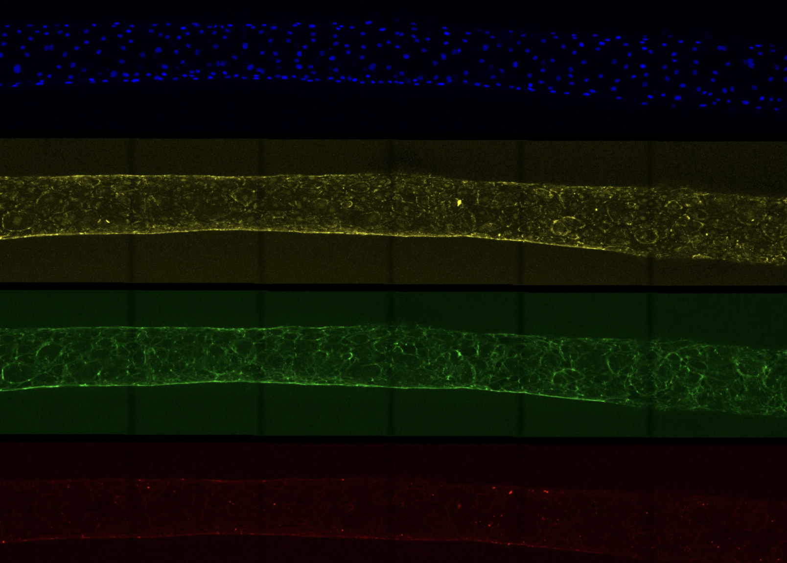
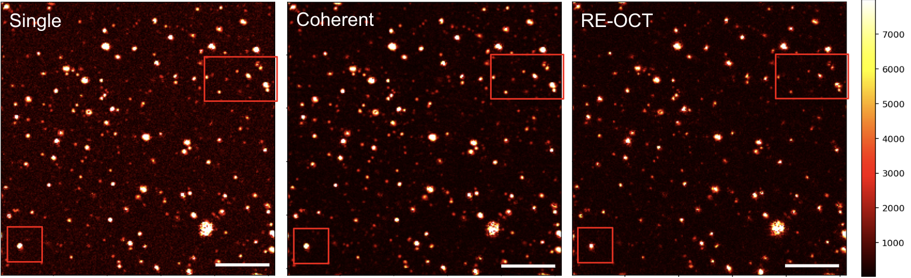

During my freshman year, I worked in the Lee Lab engineering 3D lymphatic vessels using microfluidic platforms. I studied how the secretome of breast cancer cells affects the morphology of lymphatic vessels and investigated the mechanisms behind those changes.

I currently work in the Adie Lab, where I am developing a fast, GPU-accelerated image processing pipeline in CuPy for resolution-enhanced optical coherence tomography (OCT). Results from this work have been submitted to SPIE Photonics West.